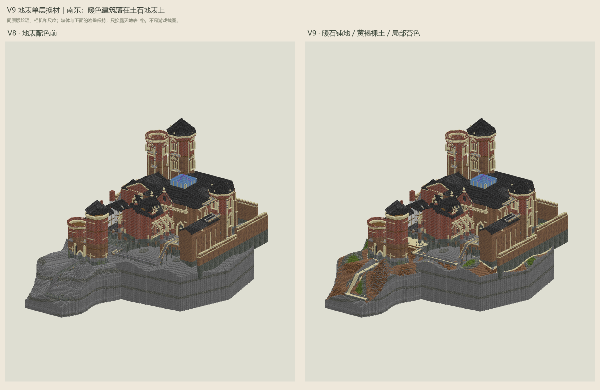
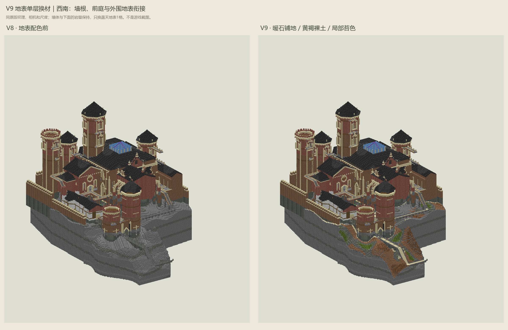
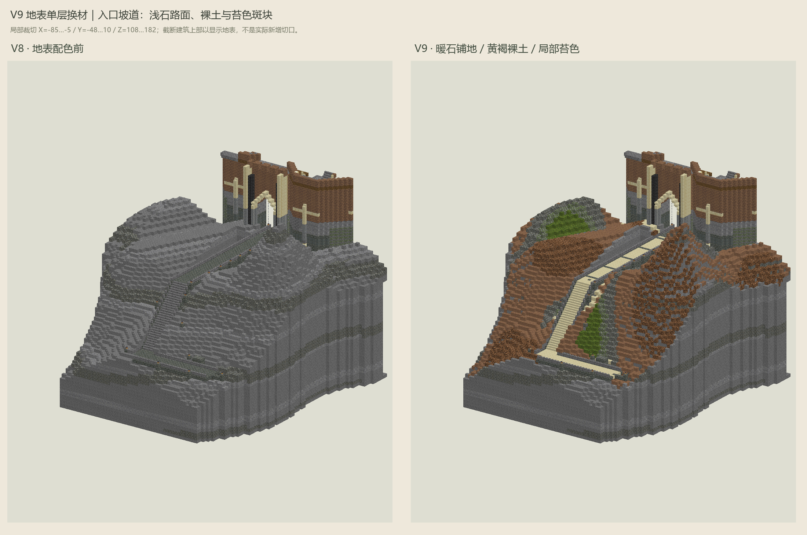

余响堡 / V9地表配色 / V8建筑外观保留
只换地表，让城堡与土地接起来
入口和墙根采用暖色铺石，往外过渡到黄褐裸土、风化岩石与少量苔色。建筑仍保持V8的暖褐与砖红；下面的岩壁不涂成土色，也不额外加厚地基。
范围与查看说明 ↗ 地表材料与换材数量 ↗ 回看V8墙体配色 ↗
本轮没有挖地下、增加土层或改建筑形状。地表方块如同时露出侧面，该方块自身的一格侧面也会随材质改变；其下内容不变。露天道路只换同形材料，方向、高度、宽度和净空保持。
整堡：地表与暖色墙体的关系


左V8、右V9。读取本机26.3-snapshot-9原版方块模型和纹理绘制，不是游戏截图。建筑和岩体均绘出；音乐/控制不单独绘出，但保留在完整模型中。
近看入口：道路、土肩与岩壁

按图中坐标裁切，部分建筑上部被剖去以显示地表，不能把图边界当成城堡实际边缘。灰色横缝是保留的旧路面，陡坎与裂隙仍保留裸岩，灯座也没有换材。
四个区域，共用一套土石色
色块取原版纹理平均色，不是游戏光照。自然地表按连续区域分布材质，不是新增草丛、树木或薄苔藓毯；本轮所有替换都保持原方块形状。
完整模型与逐格差异
完整V9模型（含音乐） ↗ V8→V9逐格换材 ↗ 保护检查与源文件摘要 ↗
逐格差异使用整堡设计坐标，不是服务器世界坐标。全模型材料现状见上方材料文件；本轮数量不能代替最终采购单。
展开实际换材明细
| 原材料 | 新材料 | 数量 |
|---|
施工前仍需完成的工作
这轮是原第3步中的地表配色补充。其余立面形状精修、照明协调、统一施工包/NBT和隔离创造档实测仍未完成。原有V8、音乐NBT和真实存档没有改动，不要把旧NBT当成V9。
2,307个音符盒、32,260格音乐/控制、471个光源及灯具组件保持，35条登记路线的支撑形状与净空保持。静态保护检查不等于实机音乐、碰撞、光照或防刷怪验收。预览省略UV锁定、环境遮蔽、游戏光照和生物群系染色，动画取首帧。网页仅静态检查，未浏览器交互验收。分享时请连同本目录3张PNG一起发送，离线查看无需Python或网页服务。